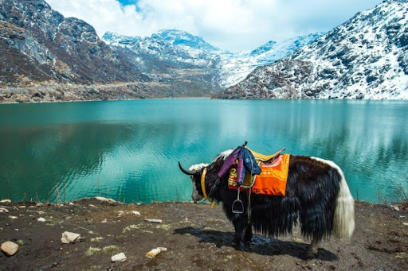
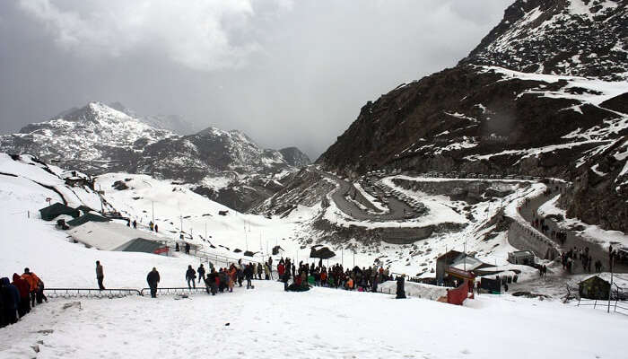

Gangtok

Darjeeling

Nathula Pass
SIKKIM
Small But Beautiful...
Sikkim is one of the beauties in the northeastern part of India. It is nicely tucked away and beautifully landlocked with immense natural beauty, it has all the components which would soothe you from the tiredness of vigorous day-to-day activities.Apart from stunning sights, one can also experience the bliss of snowfall in Sikkim when on their Sikkim holiday. To make it a wonderful exploration, here are a few places to visit in Sikkim that must make it to your plan.
Most visited places in Sikkim